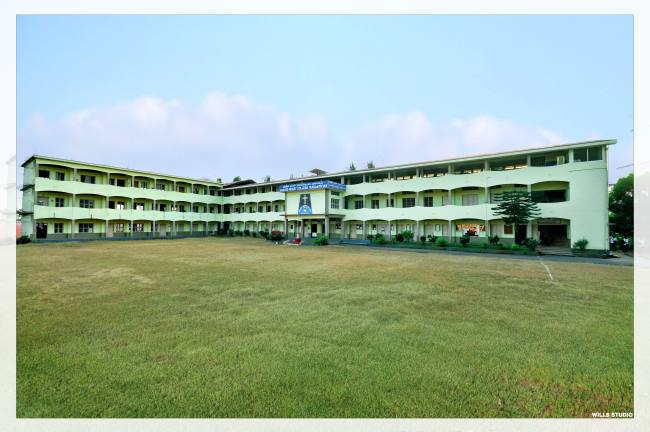

About Institutions
The Institutions are:
Guardian Angel Hr. Primary School

Guardian Angel Primary School was started in the year 1898 and this school is a mother of all the sacred heart educational institutions. This school is an aided school and right now 6 aided teachers and 9 un aided teachers offer their valuable service towards the growth of the institutions. Presently 638 students obtain education in this school. The school gives utmost priority to value based education and extracurricular activities. This school is one of the oldest schools in our locality. At present Miss Jacintha Lobo is the headmistress of this school.
Sacred Heart English Medium School

Sacred Heart English Medium School was established on 1997 by Rev. Fr. Charles Noronha. It began with LKG, UKG, first standard and Sr. Leena Mathias was the first Principal of the school. Today this school has been well established with classes from LKG till X Std, with two sections each in every class. There are altogether 1000 students pursuing their education in this institution. There is altogether 35 teaching and 7 non teaching staff rendering their services in this school. At present Sr. Jacinta Pinto (Salesian sisters of Don Bosco congregation) is the Principal of the school. In addition to focusing on academic excellence due attention is given to co curricular and extracurricular activities, games etc. The large play ground helps the boys and girls to excel in games like volleyball, throw ball, football, Kho-Kho, Kabadi and athletics. Regular Physical Education classes are conducted as the part of regular schedule. This school is equipped with ‘Teach Next’ smart boards for the modern and digital form of education.
Sacred Heart Kannada Medium High School and Sacred Heart P.U. College

SECRED HEART HIGH SCHOOL MADANTHYAR was established in 1981 and it is managed by the Pvt. Aided. It is located in Rural area. It is located in BELTHANGADY block of DAKSHINA KANNADA district of Karnataka. The school consists of Grades from 8 to 10. The school is Co-educational and it doesn't have an attached pre-primary section. The school is N/A in nature and is not using school building as a shift-school. Kannada is the medium of instructions in this school. This school is approachable by all weather road. In this school academic session starts in April.
Sacred heart Pre- University College Madanthyar is a renowned educational institution which attracts the students from various Districts such as Chikamagaluru, Koorg,and Dakshina kannada and Mysore Districts. This esteem institution was established in 1981 by late Rev Fr Liguory Dsouza. The college received the grant in Aid in the year 1988 and for the high school in 1986. This college has been accredited with ‘A’ grade statues by the PU Education Department. The student strength as of now is 579 in PUC. There are altogether 45 staff members rendering their services. Rev. Fr Jerome D’Souza is heading the institution as the Principal.
Sacred Heart Degree College

Sacred Heart College was established on 1982 by Rev. Fr. Liguory Dsouza. In the beginning there were only B.A and B.Com courses. The college received government aid in the year 1987 and later BCA, B.Com additional section and M.com sections were added. At present three are 758 students pursuing their education in this prestigious institution. There are 52 staffs catering the educational needs of the students. Mr. Ivan Sequira is the present Principal of the college.